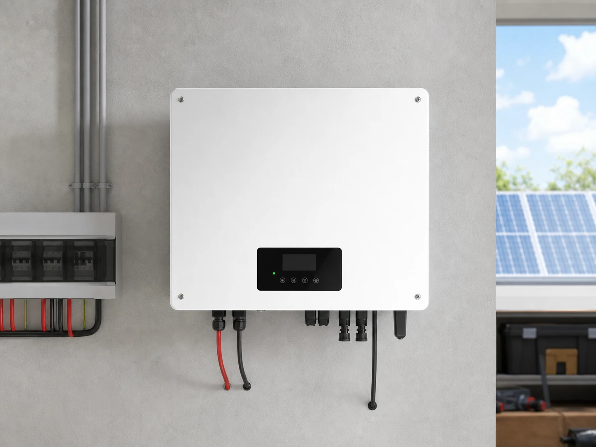

Мережева
Для економії електроенергії вдень та генерації без акумуляторів.
Підбираємо станцію під реальне споживання, резервне живлення та особливості об’єкта. Допомагаємо з обладнанням, проєктом, монтажем і запуском.

Для економії електроенергії вдень та генерації без акумуляторів.
Для економії та резервного живлення під час відключень.
Рішення під денний графік навантаження підприємства чи комерційного об’єкта.
Її визначають за місячним і погодинним споживанням, доступною площею та потребою в резерві. Почніть із нашого конфігуратора, а остаточний розрахунок перевірить інженер.
Для автономної роботи потрібен гібридний інвертор, акумуляторна система та правильно виділені резервні лінії.
Зателефонуйте або залиште заявку — менеджер уточнить споживання й умови об’єкта.
Зв’язатися з METON